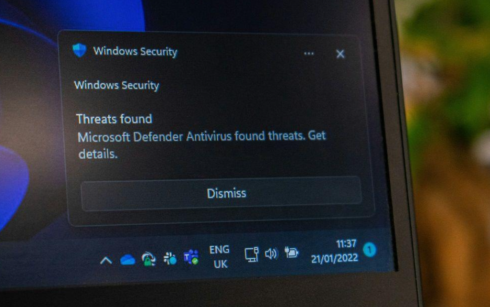

Understanding Malware
Malware, short for malicious software, is a very broad term used to describe any program designed to harm devices, steal information, or gain unauthorized access to computer systems. Malware can take many different forms, and attackers use different techniques to infect and compromise devices or systems, depending on the situation.
Detecting Malware
Detecting malware is an important part of protecting computer systems. Antivirus software, such as Microsoft Defender, Malwarebytes, and other security programs, monitor activity on a device to identify potential threats. When something suspicious is detected, the software can alert the user and take action to prevent further damage.
The image below shows an example of a malware detection notification from Windows Security. Microsoft Defender has identified potential threats (or malware) and is notifying the user that further action may be needed. This is one way antivirus software helps users recognize and respond to malicious software, however, there are such things as false positives, where a program may be flagged as malicious when it is not. It is important to research and verify any alerts before taking action.

Example of Microsoft Defender notifying a user that threats have been found.